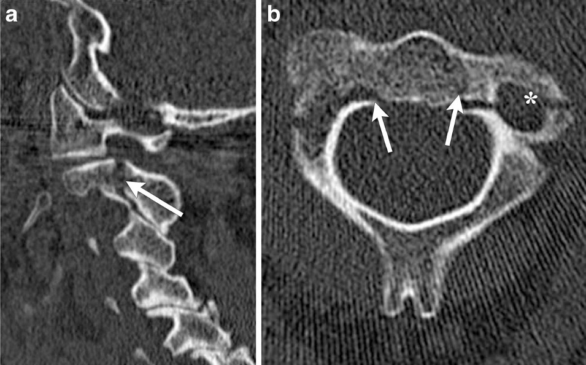

Ficha del catálogo
Traumatismo de columna cervical
- Sistema
- Nervioso
- Modalidad
- TC
- Región
- Columna cervical y unión craneocervical
- Dificultad
- Intermedio
El traumatismo cervical exige descartar lesiones óseas y ligamentosas que comprometan la estabilidad y la médula espinal. La selección de pacientes se apoya en reglas clínicas de decisión, y la tomografía ha sustituido a la radiografía como estudio inicial en el paciente con criterios de riesgo.
Técnica
Tomografía volumétrica de columna cervical desde la base del cráneo hasta la primera vértebra dorsal, con reconstrucciones sagitales y coronales en ventana ósea y de partes blandas. La resonancia se añade ante déficit neurológico o sospecha de lesión ligamentosa.
Qué observar
- Continuidad de las líneas de alineación anterior, posterior y espinolaminar
- Altura y morfología de cada cuerpo vertebral y de los muros
- Distancia entre el arco anterior del atlas y la apófisis odontoides
- Integridad de la odontoides y de las masas laterales del atlas
- Separación de apófisis espinosas y de las facetas articulares
- Aumento de partes blandas prevertebrales y hematoma asociado
Hallazgos
Se identifican trazos de fractura de bordes nítidos, pérdida de altura de los cuerpos, desalineación de las líneas de referencia y aumento de las partes blandas prevertebrales. En el nivel superior destacan la fractura de la odontoides y la fractura por estallido del anillo del atlas con separación de las masas laterales. En el segmento subaxial predominan las fracturas por compresión y por estallido con retropulsión de fragmentos, y las lesiones por distracción y rotación con luxación o enclavamiento facetario. La resonancia añade el estado de los ligamentos, del disco y de la médula.
Perlas
La lesión ligamentosa pura puede pasar inadvertida en la tomografía y producir inestabilidad grave, de modo que el aumento de la distancia interespinosa, el ensanchamiento facetario o la angulación segmentaria obligan a completar el estudio con resonancia. Toda fractura cervical exige revisar el resto del raquis, porque las lesiones no contiguas son frecuentes.
Diagnóstico diferencial
- Variante anatómica del arco posterior
- Bordes corticalizados y regulares, sin edema ni hematoma prevertebral asociado.
- Cambios degenerativos con osteofitos
- Contornos esclerosos y remodelados, ausencia de trazo agudo y de aumento de partes blandas.
- Fractura patológica
- Existe destrucción lítica o masa de partes blandas y el mecanismo traumático es desproporcionadamente leve.
- Seudosubluxación fisiológica del niño
- Desplazamiento leve de los niveles superiores que se alinea con la línea espinolaminar y carece de signos de lesión.
Simuladores
- Artefacto de movimiento o de deglución que simula desalineación
- Sincondrosis no fusionadas en el paciente pediátrico
- Superposición de estructuras en cortes de mala calidad
Por modalidad
- TC
- Es la técnica inicial por su sensibilidad para las fracturas y por la rapidez con la que cubre todo el segmento.
- RM
- Valora médula, discos, ligamentos y hematoma epidural, y es imprescindible ante déficit neurológico.
Protocolo
Adquisición volumétrica con cortes finos y reconstrucciones multiplanares que incluyan la unión craneocervical y la charnela cervicodorsal, zonas donde con más frecuencia se pasan por alto lesiones. Ante déficit o sospecha ligamentosa se completa con resonancia que incluya secuencias con supresión grasa.
Clasificación
Las fracturas de la apófisis odontoides se dividen clásicamente en tres tipos según la altura del trazo, con afectación de la punta, de la base del proceso y de la extensión al cuerpo del axis, siendo la del segundo tipo la de mayor riesgo de falta de consolidación. En el segmento subaxial se emplean sistemas que puntúan la morfología de la lesión, la integridad del complejo ligamentoso posterior y el estado neurológico para orientar el tratamiento.
Errores frecuentes
- No incluir la charnela cervicodorsal en el estudio
- Descartar inestabilidad con una tomografía normal en lesión ligamentosa pura
- Omitir la revisión del resto del raquis ante una fractura cervical confirmada

traumatismo cervical fractura vertebral odontoides inestabilidad líneas de alineación tomografía urgente